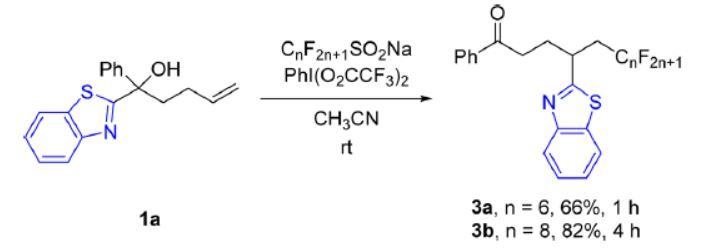

我用1a代替反应机理中的1进行计算
以下使用Gaussian16进行计算
1.优化出三氟甲基自由基、1、I、II、III
2.
将I中新成的CC键拉长至1.85埃，固定优化
将II中新成的CC键拉长至2.00埃，固定优化
将II中断裂的CC键拉长至2.00埃，固定优化
寻找过渡态
1.不要被gaussview所显示出来的化学键所迷惑，模型上的化学键长什么样只能起到参考作用，实际上原子之间有无作用力、作用力多大并不能依据gaussview进行判断
2.在用ts关键字进行过渡态搜索时，先对起反应的化学键进行固定优化有利于找到过渡态
3.在用ts关键字进行过渡态搜索时，对于过渡态的初猜很重要，对于反应键长的猜测会直接决定成败
4.用opt关键字优化分子构型时，初始模型的搭建的差异会导致优化出来的分子呈现不同的构象，能量上会有差异